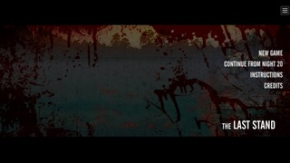
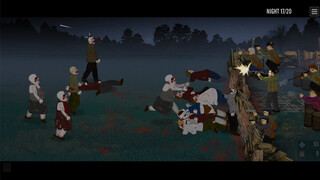
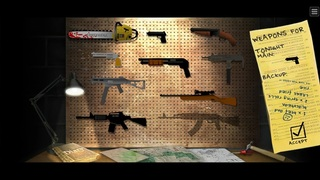
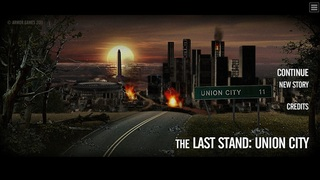
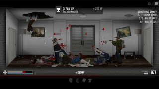
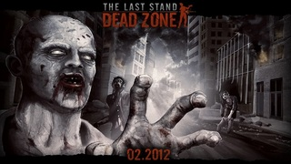
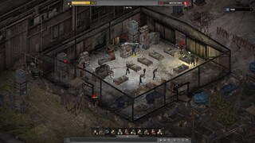
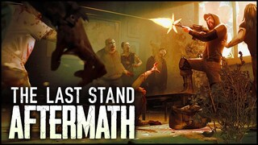
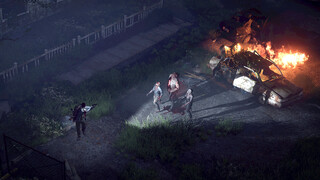

Aquí encontrarás información sobre ésta gran saga.
En "The Last Stand", el primer título de la serie, los jugadores se encuentran en medio de un apocalipsis zombi. Encarnando a un valiente sobreviviente, tu objetivo es proteger tu refugio de oleadas interminables de zombis. Deberás buscar suministros, fortificar tu posición y luchar ferozmente contra los no-muertos para mantener a salvo a tus compañeros y resistir el asedio. Con un enfoque en la gestión de recursos y la estrategia de combate, este juego te desafiará a mantener la calma en medio del caos y a tomar decisiones cruciales para sobrevivir.
  En "The Last Stand 2", la lucha por la supervivencia continúa con aún más intensidad y desafíos. Los jugadores se embarcan en un viaje en busca de un lugar seguro en un mundo infestado de zombis. A medida que avanzan a través de diferentes ubicaciones, deberán enfrentar hordas de no-muertos y tomar decisiones cruciales que afectarán el destino de su personaje y su grupo. Este juego presenta una jugabilidad mejorada, una variedad de armas y elementos adicionales que hacen que la experiencia sea aún más emocionante y desafiante.
"Union City" es la tercera entrega de la serie y transporta a los jugadores a una ciudad post-apocalíptica. Aquí, asumen el papel de un superviviente atrapado en una ciudad devastada llena de peligros y misterios. La exploración se convierte en una parte central del juego, ya que los jugadores buscan suministros, desbloquean secretos y se enfrentan a amenazas tanto humanas como zombis. La combinación de elementos de supervivencia, narrativa rica y un vasto mundo abierto hacen que "Union City" sea una experiencia inmersiva que lleva la serie a un nuevo nivel.
 "The Last Stand: Dead Zone" se aleja de la fórmula de juego tradicional y se convierte en un juego de estrategia y construcción de base en un mundo zombi. Los jugadores deben gestionar un refugio, reclutar supervivientes, buscar recursos y defender su enclave de zombis y otros jugadores en línea. Este juego se enfoca en la construcción de defensas y en la toma de decisiones estratégicas, lo que agrega un nuevo nivel de profundidad y complejidad a la serie "The Last Stand".
 "The Last Stand: Aftermath" lleva la serie a un territorio completamente nuevo al ofrecer una experiencia de juego en tercera persona con elementos de disparos. En un mundo post-apocalíptico, los jugadores deben explorar, luchar contra zombis y otros enemigos, y tomar decisiones que afectarán el desarrollo de la historia. Con gráficos mejorados y una jugabilidad más inmersiva, "Aftermath" representa una evolución emocionante de la serie "The Last Stand", manteniendo su legado de supervivencia en un mundo devastado.
 